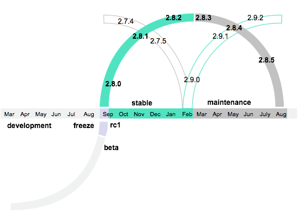
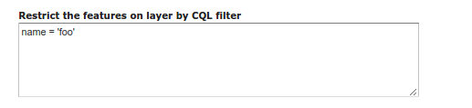
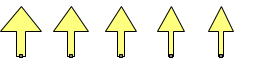

FOSSGIS 2016 - Salzburg
Neuerungen im GeoServer
Nils Bühner
terrestris GmbH & Co KG
About
- Informatiker
- Java (Spring, Hibernate)
- Webtechnologien
- Entwickler bei terrestris
- OpenSource GIS aus Bonn
- Projekte, Support & Schulung
- Beratung & Planung
- Implementierung & Wartung
GeoServer

- Konfiguration über Browser
- OGC-Dienste
- Monitoring
(Serverstatus, Logs) - erweiterte Features
(z.B. GeoWebCache)
Release-Zyklus
 Quelle:http://docs.geoserver.org/latest/en/developer/policies/community-process.html
Was ist im letzten Jahr passiert?
- Allgemeine Bugfixes
- Security fixes
- Neue Features
In diesem Vortrag:
Breite statt Tiefe
XEE Vulnerability
Unberechtigter Abruf beliebiger Dateien vom Server
Details: Blogpost vom 27. Juni 2015
Ticket: GEOS-7032
Gefixt in:
- 2.7.1.1 (stable patch release)
- 2.6.4 (maintenance release)
- 2.5.5.1 (patch release)
Remote Code Execution
Unberechtigtes Ausführen von Code auf dem Server
Details: Blogpost vom 20. Oktober 2015
Ticket: GEOS-7124
Gefixt in:
- 2.8.0 (stable release)
- 2.7.3 (maintenance release)
- 2.6.5 (archived release)
Upgrade!
- 2.9.0
- 2.8.4
- 2.7.6
Code Sprint
Codesprint Mitte Januar 2016 in Kanada
Update von Apache Wicket (GUI) von v1.4 auf v7.x (!)
Drin seit Release 2.9.0
Finanziert durch Sponsoren
Quelle:http://blog.geoserver.org/2016/01/25/geoserver-code-sprint-success/
Neue Features?
- 2.7.x (März 2015)
- 2.8.x (Oktober 2015)
- 2.9.x (Juni 2016)
2.7.x
WMS Time
Unterstützung relativer Zeitangaben:
- Letzten 36 Stunden (bis jetzt)
time=PT36H/PRESENT - Der Tag nach dem 25.12.2012
time=2010-12-25T00:00:00.0Z/P1D
Alpha composition and Color blending
Verschiedene Filter und Effekte (SLD),
z.B. multiply, darken, hard light
WPS
- Anbindung an das Security-System des GS
- Limitierung (timeouts, max parallel executions)
- Prozesse können gestoppt werden
- Prozess-Monitoring in der GUI
- Status eines Prozesses nun auch im Cluster bekannt
Details: Status of GeoServer WPS, Andrea Aime, FOSS4G-NA 2015
Cascaded WFS Stored Queries
- GeoServer als Proxy
- Layer auf Basis vorkonfigurierter Anfragen an externe WFS-Dienste erzeugen
- Mapping von Anfrageparametern
- Read-Only (kein WFS-T)
Mehr: http://docs.geoserver.org/latest/en/user/data/cascaded/stored_query.html
2.8.x
Curved Geometries
Bisher: Unterstützung von curved geometries aus Oracle-DB
(nur lesend)
Neu: Unterstützung von curved geometries aus PostGIS
(lesend und schreibend)
Feature filter
"Mini SQL view"
Unabhängig von der Datenquelle
Unabhängig vom Protokoll
JAI-Ext
JAI = Oracle Java Advanced Imaging (default)
JAI-Ext = JAI Open Source
(unterstützt Raster NODATA)
github.com/geosolutions-it/jai-ext
-Dorg.geotools.coverage.jaiext.enabled=trueImporter
Prozessierung von Rasterdaten während des Imports
Reprojektion:
{
"type": "GdalWarpTransform",
"options": [ "-t_srs", "EPSG:4326"]
}
Overviews erzeugen:
{
"type": "GdalAddoTransform",
"options": [ "-r", "average"],
"levels" : [2, 4, 8, 16]
}
z ordering support
Neue Optionen im SLD: sortBy und sortByGroup
Mehr: http://docs.geoserver.org/latest/en/user/styling/sld-extensions/z-order/index.htmlDynamische Pfeile
Generelle Syntax:
extshape://arrow?hr=[hrValue]&t=[tValue]&ab=[abValue]
- hr: height over width ratio hr > 0 - default: 2
- t: thickness t ∈ [0,1] - default: 0.2
- ab: area head base ratio ab ∈[0,1] - default: 0.5
Sonstiges
- Community:
- Embedded GeoFence github.com/geoserver/geofence
- MongoDB als Datenquelle
- Erhöhte Label-Dichte
- Neue Stile auf Basis von Vorlagen
- Neue Vendor-Parameter zur Kontrastverbesserung
2.9.x
Neue Voraussetzungen
- Java 8 ist Pflicht
OpenJDK auch möglich - Servlet 3 kompatibler Server
z.B. Tomcat 7.x oder Jetty 8.x
Internes
- Upgrade auf Wicket 7
(CodeSprint) - Upgrade auf Spring 4
(-> Verzögerung des Releases) - Upgrade auf JAI-Ext 1.0.9
- Verbesserungen in der GUI
- Restrukturierung des user guides
Neue Features
- Linien mit Versatz (SLD/CSS)
- Resource REST API
(icons, fonts, config files) - About/Status REST API
(installierte Komponenten) - UTFGrid Unterstützung für WMS und WMTS
- Vektormasken, um NODATA Bereiche auszuschneiden
Details: http://blog.geoserver.org/2016/05/30/geoserver-2-9-0-released/